Návod "step by step" na používání a centrování mikroskopu Olympus CX31
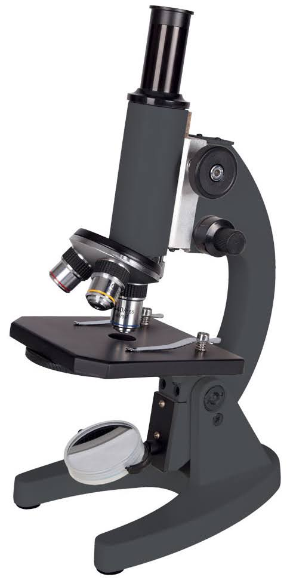
Při jakémkoli přemisťování je nutné mikroskop držet oběma rukama na dvou určených místech (1, 2). Jakýkoli jiný způsob přemisťování či posunování po pracovní desce stolu může vést k vážnému poškození mikroskopu!
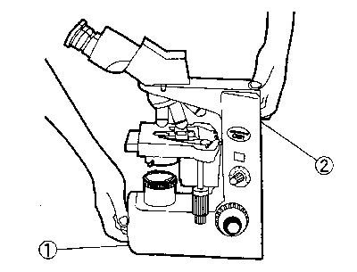
Před zapnutím mikroskopu kolébkovým spínačem (1) se přesvědčte, že napětí přiváděné ke světelnému zdroji je staženo na minimum, tedy že otočný potenciometr (2) je nastaven na hodnotu 1. Teprve po zapnutí spínače (1) je možné zvyšovat napětí (otáčení potenciometru ve směru šipky) a tedy intenzitu emitovaného světla. Otočný potenciometr používejte i v průběhu mikroskopování k úpravě světelné intenzity, např. vždy při změně objektivu.
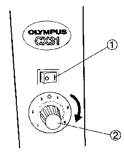
Na pracovní stolek mikroskopu vložte připravený preparát tak, že pomocí páčky (1) odkloníte držák preparátu (3). Zaostřete na preparát pomocí ostřícího šroubu (2).
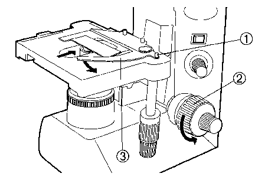
Pro posouvání preparátu po pracovním stolku mikroskopu používejte mechanismus křížového posunu (viz šipky).
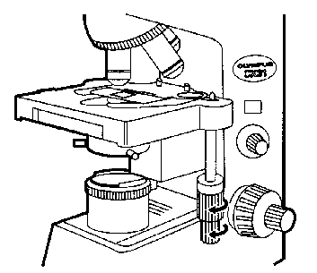
Pro jemné doostření preparátu používejte šroub jemného zaostření (1).
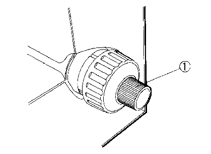
Toto nastavení přizpůsobí optiku mikroskopu vašim individuálním potřebám. Je třeba mu věnovat dostatečnou pozornost, neboť špatně nastavený mikroskop má nejen horší zobrazovací schopnosti, ale může být i příčnou únavy či bolesti očí, bolesti hlavy, případně i nevolnosti. Zaostřete na preparát a pozorujte jej oběma očima. Současně upravte vzdálenost mezi okuláry tak, aby se dílčí kruhové obrazy pozorované jednotlivými okuláry právě spojily v jeden kruhový nerozmazaný obraz.
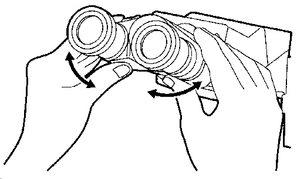
Pozorujte preparát pouze pravým okem (okulárem) a zaostřete na nějaký výrazný bod. Aniž byste přeostřili, pozorujte preparát pouze levým okem (okulárem). Současně otáčejte prstencem pod levým okulárem tak, abyste zaostřili tentýž výrazný bod. Tímto krokem je nastavena dioptrická korekce mezi pravým a levým okulárem.
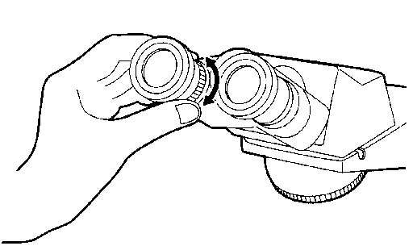
Pro centrování použijte objektiv 10×. Zaostřete na preparát a přivřete kolektorovou clonu (1) téměř k minimu. Otevřete na maximum aperturní clonu páčkou na přední straně kondenzoru. Nastavte výšku kondenzoru pomocí šroubu (2) do takové pozice, v níž hrana kolektorové clony pozorovaná v okuláru bude co nejvíce zaostřená (bude viditelný nejmenší barevný rozptyl světla, téměř v horní poloze kondenzoru).
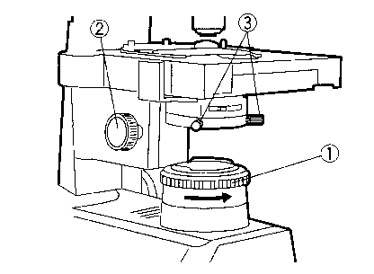
Pomocí centračních šroubů (viz předchozí obrázek, 3) vycentrujte kondenzor tak, aby obraz kolektorové clony byl ve středu zorného pole okuláru. Jako kontrolu použijte postupné otevírání kolektorové clony, kdy postupně se rozšiřující světlé pole musí přesně vyplnit zorné pole - v případě potřeby lze pozici kondenzoru jemně zkorigovat centračními šrouby..
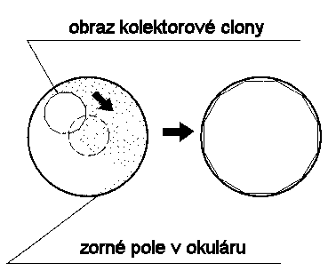
Při mikroskopování často potřebujeme měnit použité zvětšení. Toho lze docílit zařazením různě zvětšujících objektivů umístěných na revolverovém nosiči do optické soustavy. Každý objektiv je charakterizován několika znaky, z nichž nejdůležitější jsou hodnoty zvětšení a numerické apertury.
Otevřenost aperurní clony umístěnou na kondenzoru nastavíme pomocí páčky (2) maximálně na hodnotu numerické apertury objektivu, který právě používáme. S postupným uzavíráním aperturní clony se zvyšuje hloubka ostrosti a zvyšuje kontrast, postupně však vystupují i různé nečistoty nebo nežádoucí vrstvy buněk. Obvykle bývá dosaženo nejlepších výsledků při hodnotě nastavení aperturní clony na 70 až 80 % numerické apertury použitého objektivu.
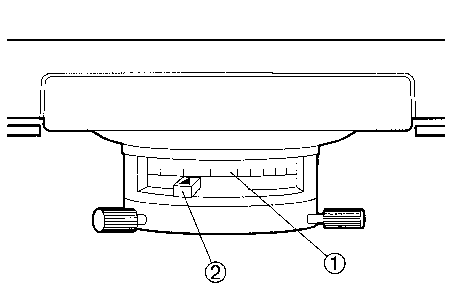
Kolektorovou clonu nastavíme otáčením jejího prstence (1) tak, aby světlo právě vyplňovalo celé zorné pole okuláru.
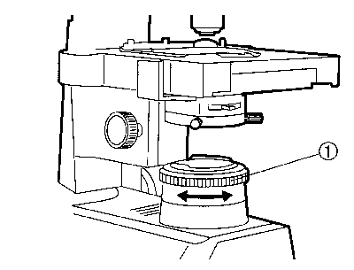